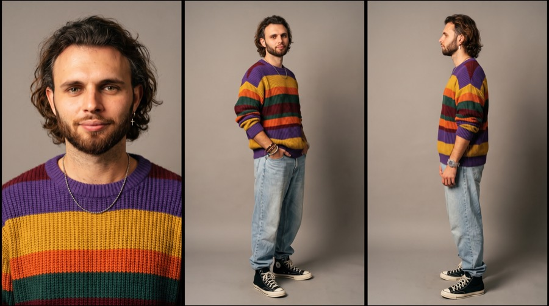
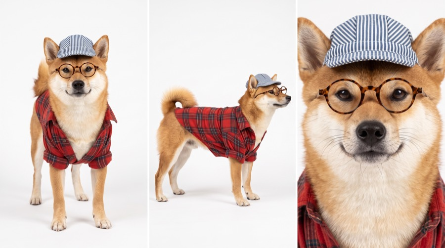
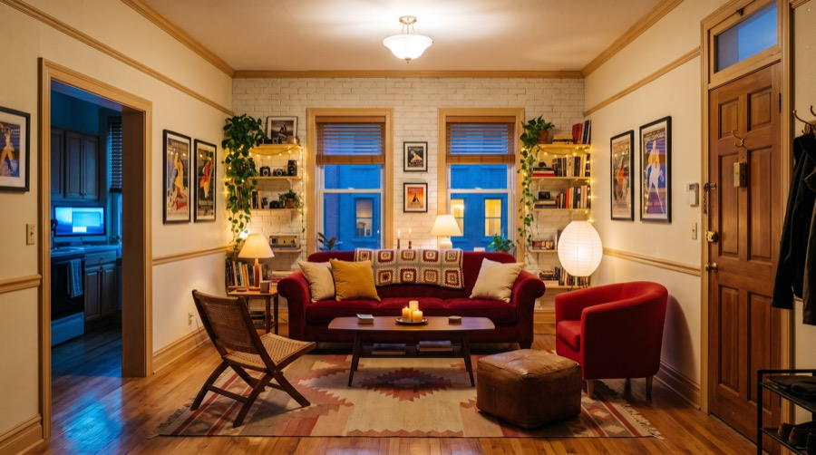
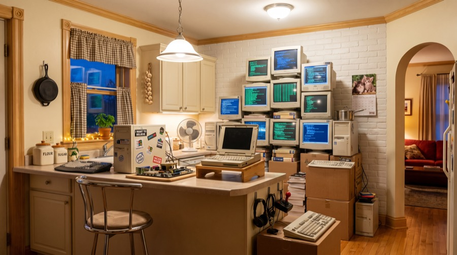

Вайбкодящая
сиба
Ситком девяностых на тридцать секунд: герой приходит с продуктами, а на кухне сиба в кепке задом наперёд заняла всю столешницу мониторами и отказывается уходить. Говорит, с акцентом, со смехом за кадром. Ниже — весь путь: четыре промпта в правильном порядке, голос, диалог и правила, без которых собака превратится в человека.
- Карточка героя — три ракурса на сером фоне. Пойдёт в сцену слотом
@image1. - Карточка сибы — профиль, фас и портрет. Станет
@image2. - Сеты — гостиная и кухня готовыми картинками плюс установочный кадр дома.
- Сцена — всё вместе, тридцать секунд одним куском.
Карточка героя
Первым делом лицо и образ в трёх ракурсах: фас крупно, три четверти в полный рост, профиль. Загружаешь своё фото как реф — лицо возьмётся с него, свитер и джинсы опишет промпт.

Character sheet, 90s sitcom style. Young man, face and identity exactly as in the attached reference image — wavy mid-length dark-brown hair with a loose centre parting falling to the jaw, thick natural brows, grey-green eyes, full trimmed beard and moustache with warmer copper tones through the chin, fair warm-toned skin, a small silver hoop earring with a tiny cross pendant in one ear. Wearing an oversized chunky ribbed knit sweater with bold horizontal stripes in purple, mustard yellow, orange, dark green and burgundy — loose boxy fit, dropped shoulders, ribbed crew neck, hem falling below the hips, long sleeves bunched down over the backs of his hands; high-waisted light-wash baggy jeans with a relaxed straight leg, tucked under the sweater hem and stacking over the shoes; black high-top canvas sneakers with white rubber soles and white laces. On his left wrist a stack of accessories half hidden by the sleeve: several woven beaded friendship bracelets, a braided leather cord, thin silver bangles and a chunky plastic watch on a colourful woven strap. A thin silver ball-chain necklace sitting at the base of the throat. Three panels in one horizontal frame, thin clean separation between panels, the same man and the same outfit in all three. PANEL 1 — front view, close up. Chest-up, squared to camera, head level, eyes to camera, relaxed neutral expression with a faint closed-lip half-smile. The sweater collar and the chain read at the bottom of frame. PANEL 2 — three-quarter view, full height. The complete figure head to toe, body turned about thirty degrees, weight on one hip, one hand loose at his side and the other pushed into a jean pocket, sleeve bunched at the wrist. The full sweater, jean break and sneakers all in frame. PANEL 3 — profile view, full height. The complete figure head to toe in clean side profile, standing relaxed, arms at his sides, the hair falling past the ear, the beard line and the earring readable in silhouette. Warm tungsten studio lighting, soft key with gentle falloff. Neutral grey backdrop. 35mm film grain, warm photochemical colour, slightly soft micro-contrast. Photoreal, no illustration.
Карточка сибы
Панели другие, чем у героя: безголовая панель для собаки бессмысленна, поэтому профиль в стойке, фас в полный рост и портрет как якорь. Профиль тут не для красоты — по нему модель запоминает силуэт: глубину груди, линию спины и хвост колечком.

A three-panel photorealistic character reference sheet of one real Shiba Inu, composed as one horizontal frame divided into three equal vertical panels side by side, thin clean separation between panels, the same dog and the same styling rendered identically across all three. No text, no labels, no numbering anywhere in the image. The dog is the exact same individual as the attached reference photograph. A compact well-muscled red Shiba Inu with a dense double coat: rich red-orange guard hair across the back, shoulders, flanks and outer legs, and clean cream-white urajiro markings on the muzzle, cheeks, throat, chest, belly, inner legs and the underside of the tail. Small erect triangular ears set wide and tilted slightly forward, dark almond-shaped eyes set obliquely with black rims, a broad black nose with a slightly damp surface, black lip line, thick white whiskers, a broad flat forehead with a defined stop, and a thick tail carried curled over the back. Individual guard hairs and the softer undercoat both visible, with real fur direction, real density variation, and light catching the guard hairs at the coat edges. He wears a blue-and-white striped baseball cap turned backwards, sitting naturally on the crown with the closure strap over the forehead and both erect ears standing free on either side of the cap, and round tortoiseshell-framed glasses slipping slightly down the muzzle. The collar of an oversized red and black plaid flannel shirt sits loosely around his neck and shoulders. Everything is worn realistically, sitting on the fur with real weight and real contact, fur compressed slightly beneath the cap band and the flannel collar. Real dog anatomy and proportions throughout. No anthropomorphism, no standing on hind legs, no human posture, no human hands, no cartoon styling, no exaggerated features. LEFT PANEL — full body side profile, standing squared in a natural breed stance on all four legs, seen from directly beside him, head level and facing forward out of profile. The full silhouette reads: chest depth, back line, tuck-up, angulation of the hind legs, and the curled tail over the back with its cream underside visible. CENTER PANEL — full body front view, standing squared to camera on all four legs, weight even, head level, ears up, eyes directly to camera, mouth closed. The full front of the flannel collar and the chest markings read clearly. RIGHT PANEL — tight head and chest close-up, shot straight on, the head filling the panel from just above the cap down to the top of the chest. Every detail at maximum resolution: the fold and texture of the ears, the eye shape and the dark iris with real moisture and reflection, the transition line where red coat meets cream urajiro on the cheeks and muzzle, the nose texture, individual whiskers, and the weave of the cap fabric. Coat color renders identically in value and hue across all three panels — the same red-orange, the same cream, never darker, never washed out, never colour-shifted. Pure white seamless background in every panel, one uniform value corner to corner with no gradient, no seam line and no vignette. Soft even studio lighting, flat and shadowless, matched fill from both sides so neither side of the face is darker. No cast shadow, no contact shadow beneath the paws, no floor shadow, no halo or edge darkening anywhere outside the dog. Sharp focus edge to edge in all three panels, no depth-of-field falloff and no background blur. Shot on an 85mm lens, high detail, photograph not illustration.
Сеты
Два интерьера идут в сцену готовыми картинками. Снаружи нужен отдельный установочный кадр — с него открывается эпизод, на него ляжет название.


Cinematic establishing shot of a classic American brownstone row house at blue hour, vertical 9:16 framing, camera on the opposite sidewalk looking slightly upward at the building. Three-storey nineteenth-century townhouse in warm tan-brown brick with a flat roofline, a simple stone cornice, and three dark chimney stacks standing against the sky. Tall double-hung sash windows in white-painted frames, several glowing warm amber from inside with sheer curtains half drawn, one upper window showing a sliver of a lit room with a plant on the sill. Two window boxes of trailing flowers on the ground-floor windows. A recessed entrance slightly left of centre with a heavy wooden double door with glass panels, a small portico above it, and two warm wall sconces throwing soft pools of light onto the brick. A short flight of stone steps down to the sidewalk with black iron handrails, a low black iron fence along the frontage, a terracotta pot with a small shrub at the bottom of the steps. A narrow black iron balcony and railing on the upper right of the facade. A single utility wire crossing the sky at the upper right. The dark silhouette of leafy tree branches intruding into the top right corner. Deep indigo blue sky overhead grading down to warm orange, peach and dusty rose at the horizon on the right, the last of the sunset. Distant city lights twinkling in the low right background beyond the rooftops. The street itself in soft shadow, the parked roof of a pale sedan cutting across the bottom left corner and a dark car at the bottom right, sidewalk paving faintly catching the streetlight. Warm practical lighting only — window light, door sconces, distant streetlamps — against the cool blue ambient dusk. Nostalgic, cosy, inviting. Shot on 35mm film, 50mm lens, static locked-off camera, deep focus with the whole facade sharp, fine organic film grain, warm photochemical colour, gentle highlight bloom around the lamps, natural contrast with readable shadows. Photograph, not illustration. No text, no title card, no lettering, no captions, no subtitles, no logo, no watermark, no interface overlay, no people, no daylight, no harsh shadows, no neon, no HDR, no digital sharpening.
Сцена
Тридцать секунд целиком, без склеек. Реплики размечены по таймкодам, смех — только в отмеченных точках. Загружай рефы строго по нумерации слотов.
90s multi-camera sitcom scene, 30 seconds, continuous, 9:16 vertical. Shot on 35mm film, bright evenly lit cosy apartment, high-key warm tungsten lighting, soft fill from every side, no harsh shadows, flat theatrical staging, characters face camera, subtle film grain, sitcom set brightness. EVENING: deep blue dusk outside the windows, warm lamps lit inside. All dialogue in English. CHARACTERS — MAN: @image1 a lean man in his mid-twenties, wavy mid-length dark-brown hair with a loose centre parting falling to the jaw, thick natural eyebrows, full trimmed beard and moustache, grey-green eyes, a small silver hoop earring with a tiny cross pendant in one ear. Oversized chunky ribbed knit sweater with horizontal stripes in purple, mustard, orange, dark green and burgundy, dropped shoulders, crew neck, hem below the hips, sleeves bunched over the backs of his hands. High-waisted baggy light-wash jeans, black high-top canvas sneakers with white soles. On his left wrist a stack of woven beaded bracelets, a braided leather cord and a chunky watch, half hidden by the sleeve. Thin silver ball-chain necklace. Speaks American English. SHIBA: @image2 photorealistic real red Shiba Inu, compact and well-muscled, dense double coat with rich red-orange guard hair and clean cream-white urajiro markings on the muzzle, cheeks, throat, chest and belly, small erect triangular ears tilted slightly forward, dark almond eyes, broad black nose, thick tail curled over the back. Blue-and-white striped cap worn backwards, sitting on the crown with both erect ears standing free on either side of it, round tortoiseshell-framed glasses slipping down the muzzle, oversized red and black plaid flannel shirt worn over its coat with rolled sleeves. Real dog anatomy and proportions, four legs, sits on its haunches with front paws up on the keyboard, NOT anthropomorphic, no human arms, no human shoulders, never standing on hind legs. Speaks English with a distinct Japanese accent — polite, precise, slightly clipped consonants, unhurried. SET — @image3 Cosy lived-in apartment. Living room with a deep red velvet sofa facing camera, mustard and cream pillows, knitted blanket, low mid-century coffee table, geometric striped rug, cream walls, white painted brick, pale honey wood trim, open shelves crammed with books and clutter, houseplants in woven baskets, warm fairy lights, candles. Heavy wooden front door with brass locks on the RIGHT. Wide archway on the LEFT into a bright kitchen @image4 taken over by a pyramid wall of 12 beige CRT and flat-panel monitors glowing with scrolling code, tangled cables, three mechanical keyboards, beige tower PCs, with cosy kitchen details still visible: gingham curtains, ceramic jars, a cooking pot sitting on top of a computer tower, basil on the windowsill. 0:00–0:03 — WIDE SHOT, static. The man enters through the front door on the RIGHT carrying a large brown paper grocery bag, baguette and greens sticking out. He pushes the door shut with his foot, takes two steps in, turns his head to the LEFT toward the kitchen archway. His eyes widen, his jaw drops. The bag slips from his hands and hits the floor, oranges rolling across the rug. 0:03–0:06 — SLOW PUSH-IN LEFT through the archway into the kitchen. The Shiba in the backwards cap and glasses types furiously across three keyboards with its front paws, curled tail flicking a mouse off the counter, tugging a cable with its teeth, scrolling code reflected in its lenses, the monitor wall glowing behind it. [LAUGH TRACK: big burst + applause] 0:06–0:09 — MEDIUM TWO-SHOT. He storms up to the counter, arms crossed, bracelets visible where the sleeve rides up. MAN (annoyed): "What are you doing? I need to cook dinner!" 0:09–0:12 — The Shiba slowly turns its head to camera, smug, looking over the top of its glasses. SHIBA (Japanese accent): "I'm vibecoding. Leave me alone." It turns dismissively back to the screen. [LAUGH TRACK] 0:12–0:15 — He jabs a finger at the monitor wall. MAN (firmer): "Okay, clear all this junk out of here! I want to cook dinner!" 0:15–0:18 — CLOSE-UP on the Shiba. It turns its whole body toward him. SHIBA (amused, Japanese accent): "You? Can you even cook?" It throws its head back in exaggerated laughter, mouth wide open with the tongue lolling out, one front paw slapping the counter, cap knocked sideways over one ear, glasses sliding down its muzzle. [LAUGH TRACK: over the Shiba's laugh] 0:18–0:21 — WIDE on the monitor wall. A thin wisp of grey smoke, one small spark pops, the central screen goes black, then all the other monitors shut off one by one in a cascade. The cold blue glow disappears, the kitchen left in even warm lamp light — still bright, just warmer. The Shiba freezes mid-laugh, mouth open, ears swivelling forward, the blue reflections in its lenses going dark, a tiny curl of smoke rising from the brim of its cap. No explosion, no fire, just a quiet burnout. [LAUGH TRACK: long "ooooh" then a burst] 0:21–0:27 — MEDIUM SHOT. He smirks, one eyebrow raised, nudges a rolled-away orange toward himself with the toe of his sneaker and picks it up. MAN (calm and satisfied): "Right. I'm going back to the store. In fifteen minutes I want all this junk gone." He turns and walks RIGHT across the living room to the front door, pauses, glances back over his shoulder to the left, exits and slams the door. The top monitor on the stack wobbles and tips over from the impact. 0:27–0:30 — CLOSE-UP on the Shiba staring at the closed door. It mockingly mouths his words with its tongue slightly out, then mutters aloud. SHIBA (sulking under its breath, Japanese accent): "Blah, blah, blah... 'all this junk'..." It straightens its crooked cap with one paw with wounded dignity, nudges its glasses back up, turns to the dead black monitor and presses a single key with one paw. Nothing happens. FREEZE FRAME. [LAUGH TRACK + applause + upbeat 90s sitcom outro sting] AUDIO: 90s sitcom laugh track at the marked beats only, no background music except the final sting. Room tone, key in lock, door creak, paper bag hitting the floor, rolling oranges, cooling fan hum, mechanical keyboard clatter, rising overheat whine, electrical pop and hiss, cascade of monitors clicking off, claws on the countertop, door slam, plastic case falling, single lonely key click. USE THIS VOICE FOR SHIBA: @audio1 NEGATIVE: dark cinematic grading, moody shadows, dim lighting, underexposed, cold blue interior, handheld camera, shaky, shallow depth of field bokeh, fisheye, wide angle distortion, neon, cyberpunk, haze, explosion, fireball, flames, dramatic destruction, cartoon dog, 3d render, pixar, anime, illustration, anthropomorphic dog, bipedal dog, dog standing on hind legs, human arms on dog, human hands, distorted anatomy, extra limbs, floppy ears, wrong breed, daylight outside, sunny, empty sterile room, modern minimalist, text, watermark, logo, subtitles, non-english dialogue.
Для субтитров и понимания. В промпте стоит All dialogue in English, а в негативах non-english dialogue — озвучка сгенерируется английской.
Голос сибы
Четыре реплики, все короткие — тут важнее тембр и акцент, чем длина. Вот как это звучит:
Акцент держит клон, а не ремарка. Japanese accent в скобках подстрахует интонацию, но по-настоящему акцент живёт в самом голосе. Для клона нужна чистая запись без музыки и эха, минута-две обычной речи — не чтение вслух с выражением.
Правила
 ▶
▶
Хочешь снимать такое на заказ?
Здесь работа не в промптах, а в порядке: карточки до сцены, реквизит описан дважды одинаково, смех размечен по таймкодам. Такие решения не гуглятся — их показывают. На обучении даю систему целиком: от первой генерации до портфолио и первых заказов. Приходи на экскурсию — покажу платформу изнутри и работы учеников, разберу твою ситуацию. Ничего продавать не буду.
Записаться на экскурсию → Бесплатно · созвон 30–40 минут · места ограничены